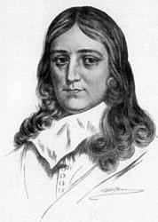
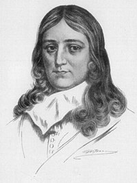

|
|
|
|
|
1 The Lord will come and not be slow, 2 Truth from the earth, like to a flow'r, 3 Rise, God, and judge the earth in might, 4 For great you are, and wonders great
|
160主必快来
1.主必快来不再延迟，他脚踪无错步，
他前面有公平正义，作先锋备道路。 2.诚实似花由地生长，随处开花发蕾， 公义必是自天上垂显，监察世界人类。 3.求主用权审批人类，重整罪恶今世， 你是君王至尊、至贵，万国归你统治。 4.你是伟大、奇妙尊贵，圣手做成一切， 高居天上荣耀宝座，永远长存不灭。 |
|
|
https://www.mred365.cn/szxg/7163.html
https://hymnary.org/hymn/TPH2018/page/649 The Lord Will Come and Not Be Slow
|
||
|
|
|
|


The Lord will come and not be slow (By Truro Cathedral Choir) (gospel hymn) https://www.youtube.com/watch?v=saaHPgmps-g -
The Lord Will Come and Not be Slow (St Magnus) https://youtu.be/-cJdsuqOqp8
LX1829
The Lord Will Come
160主必快来
| Text: | The Lord Will Come and Not Be Slow |
| Author: | John Milton, 1608-1684 |
| Tune: | ST. MAGNUS |
| Composer: | Jeremiah Clarke |
| Short Name: | John Milton |
| Full Name: | Milton, John, 1608-1674 |
| Birth Year: | 1608 |
| Death Year: | 1674 |
Milton, John,

was born in London, Dec. 9, 1608, and died there Nov. 8, 1674. His poetical excellences and his literary fame are matters apart from hymnology, and are fully dealt with in numerous memoirs. His influence on English hymn-writing has been very slight, his 19 versions of various Psalms having lain for the most part unused by hymnal compilers. The dates of his paraphrases are:—
Ps. cxiv. and cxxxvi.,
1623, when he was 15 years of ago. These were given in his Poems
in English and Latin 1645.
Ps. lxxx.-lxxxviii., written in 1648, and published as Nine
Psalmes done into Metre, 1645.
Ps. i., 1653; ii., “Done August 8, 1653;" iii.,
Aug. 9, 1653; iv. Aug. 10, 1653; v.,
Aug. 12, 1653; vi., Aug. 13, 1653; vii.Aug.
14, 1653; viii., Aug. 14, 1653.
These 19 versions were all included in the 2nd ed. of his Poems
in English and Latin, 1673. From these, mainly in the form of centos,
the following have come into common use:—
Tune Information
| Title: | ST. MAGNUS (Clarke) |
| Composer: | Jeremiah Clarke (1707) |
| Meter: | 8.6.8.6 |
| Incipit: | 51275 12323 13452 |
| Key: | F Major |
| Copyright: | Public Domain |
| Short Name: | Jeremiah Clarke |
| Full Name: | Clarke, Jeremiah, 1669?-1707 |
| Birth Year (est.): | 1669 |
| Death Year: | 1707 |
約翰·米爾頓（John Milton，1608－1674）英國詩人 [編輯]
|
約翰·米爾頓 John Milton |
|
|---|---|
|
 |
|
| 出生 |
1608年12月9日 英格蘭倫敦 |
| 逝世 |
1674年11月8日（65歲） 英格蘭倫敦 |
| 職業 | 詩人，散文家，公務員 |
| 代表作 | 《失樂園》，《復樂園》，《力士參孫》，《論出版自由》 |
| 施影響於 | 喬治·戈登·拜倫 |
|
|
|
| 簽名 | |
{kind=link}
{kind=link}
約翰·米爾頓（英語：John Milton，1608年12月9日－1674年11月8日），英國詩人，思想家。英格蘭共和國時期曾出任公務員。因其史詩《失樂園》和反對書報審查制的《論出版自由》而聞名於後世。
生平[編輯]
米爾頓的一生幾乎與斯圖亞特王朝相伴而行，他的詩歌創作和政治觀點伴隨英國革命而發展，當1674年已經失明的米爾頓去世時，米爾頓依然沒有放棄自己的政治選擇，並且他的觀點在此後廣泛影響了整個歐洲的政治和宗教信仰。
早年生涯[編輯]
劍橋歲月[編輯]
1625年進入劍橋大學，作為一個才華橫溢的學者，米爾頓在劍橋大學的基督學院完成他的學士學位和1632年碩士學位後，便開始專心於詩歌寫作。
創作、學習和旅行歲月[編輯]
1632年至1638年五年間，米爾頓辭去了政府部門的工作，住到他父親郊外的別墅中，整日整夜的閱讀，他幾乎看全了當時所有英語、希臘語、拉丁語和義大利語作品。在這段時期米爾頓寫作了《酒神之假面舞會》等一些作品。1638年，米爾頓去歐洲旅行，他在義大利停留了大部分時間。訪問過當時已被囚禁的伽利略，並同義大利人文主義者有所交往。由於英國動盪的宗教局面米爾頓提前回國，他所寫的一些小冊子被歪曲，他本人也被烙上了激進分子的烙印。
內戰、婚姻和仕途[編輯]
1642年，米爾頓與瑪利·普威爾結婚，新娘只有17歲。六個星期後，無法處理好新婚生活的瑪利回到了她父母家，米爾頓寫信要求離婚。但最終他們和解了，瑪利為米爾頓生下了四個孩子，其中的一個孩子生下沒多久就夭折了。
中年以後，米爾頓從政，他寫了許多觀點鮮明的政治文章；其時恰逢英國內戰，共和、復辟大動亂；克倫威爾派的米爾頓曾在其國務會議中任拉丁文秘書。
米爾頓曾多次寫一些論述離婚的小冊子。1644年，因為這類小冊子，再次被國會招去質詢，惱怒之際，慷慨陳辭，誕生言論出版史上里程碑式的文獻——《論出版自由》。但這次充滿激情和思辨的演講在當時並未引起太大反響，出版許可制度在半個世紀後才在英國叫停。不過，由於美國獨立戰爭和法國大革命，米爾頓的思想逐漸被世人認識並受到推崇。《論出版自由》被譯為多種文字，流傳開來。
1652年，瑪利病逝。1654年，米爾頓原本就衰弱的視力變得更壞，他徹底失明了。
1656年，米爾頓再婚，兩年後，這位新妻子因為難產而死。
1660年查理二世復辟，米爾頓被捕入獄，退出政治活動，致力詩歌創作。在雙目失明的情況下，口述完成使他名揚後世的三部偉大著作：《失樂園》和《復樂園》，詩劇《力士參孫》。
1663年，米爾頓最後一次結婚，妻子是伊莉莎白·明薩爾，這段婚姻比較幸福。
米爾頓死於1674年11月8日，死後他與喬叟、莎士比亞齊名。
影響及評價[編輯]
{kind=link}
|
|
英語維基文庫中與本條目相關的原始文獻： 《論出版自由》(Areopagitica) |
米爾頓首先是一位文學家，在詩歌創作上有傑出貢獻。同時，作為一位思想家，他的《論出版自由》成為言論出版史上自由主義的里程碑，和後來密爾的《論自由》一道，被視為報刊出版自由理論的經典文獻。但需要說明的是，《論出版自由》1644年獲許出版，流傳不廣，影響不大，直到1778年才第一次再版。不過，由於美國獨立戰爭和法國大革命，米爾頓的思想逐漸被世人認識並受到推崇。《論出版自由》被譯為多種文字，流傳開來。由此確立的言論自由基石：「觀點的自由市場」和「真理的自我修正」影響一直持續至今。維基百科的編輯和書寫理念也源於此。
「米爾頓本人也是一名書報檢查官，他主張儘可能多的自由，主張使用限制的最低原則，即此自由不能侵犯彼自由。」[1]
代表作品一覽[編輯]
|
|
維基文庫中相關的原始文獻：《失樂園》 |
詩歌與戲劇[編輯]
- 《酒神之假面舞會》（the masque Comus，1634年）
- 《失樂園》（Paradise Lost，1667年）
- 《復樂園》（Paradise Regained，1671年）
- 《力士參孫》（Samson Agonistes，1671年）
散文與政論[編輯]
- 《論出版自由》（Areopagitica：A Speech for the Liberty of Unlicensed Printing，1644年）
- 《為英國人民聲辯》（Defensio pro Populo Anglicano，1651年）
- 《建設自由共和國的簡易方法》（The Ready and Easy Way to Establish a Free Commonwealth，1660年）
參考文獻[編輯]
- ^ 阿特休爾：《權力的媒介》
https://zh.wikipedia.org/wiki/%E7%BA%A6%E7%BF%B0%C2%B7%E5%BC%A5%E5%B0%94%E9%A1%BF
Jeremiah Clarke (c. 1674- 1707)
Jeremiah Clarke (c. 1674 – 1 December 1707)[1] was an English baroque composer and organist, best known for his Trumpet Voluntary, a popular piece often played at wedding ceremonies or commencement ceremonies.
Biography[edit]
The exact date of Clarke's birth has been debated. The Dictionary of National Biography states that Clarke "is said to have been born in 1669 (though probably the date should be earlier)." Most sources say that he is thought to have been born in London around 1674.
Clarke was one of the pupils of John Blow at St Paul's Cathedral and a chorister in 1685 at the Chapel Royal. Between 1692 and 1695 he was an organist at Winchester College, then between 1699 and 1704 he was an organist at St Paul's Cathedral.[2][3] He later became an organist and 'Gentleman extraordinary' at the Chapel Royal,[2] he shared that post with fellow composer William Croft,[4] his friend.[2] They were succeeded by John Blow.[3]
Today, Clarke is best remembered for a popular keyboard piece that was originally either a harpsichord piece or a work for wind ensemble:[5] the Prince of Denmark's March, which is commonly called the Trumpet Voluntary, written in about 1700.[6] From c. 1878 until the 1940s the work was attributed to Henry Purcell, and was published as Trumpet Voluntary by Henry Purcell in William Spark's Short Pieces for the Organ, Book VII, No. 1 (London, Ashdown and Parry). This version came to the attention of Sir Henry J. Wood, who made two orchestral transcriptions of it, both of which were recorded.[7] The recordings further cemented the erroneous notion that the original piece was by Purcell. Clarke's piece is a popular choice for wedding music, and has been used in royal weddings.[8][9]
The famous Trumpet Tune in D (also incorrectly attributed to Purcell) was taken from the semi-opera The Island Princess (1699),[10] which was a joint musical production of Clarke and Daniel Purcell (Henry Purcell's younger brother or cousin)—probably leading to the confusion.[11][12][13]
Clarke's suicide[edit]
"A violent and hopeless passion for a very beautiful lady of a rank superior to his own" caused Clarke to commit suicide. Apparently, he fell madly in love with one of his female students, a young, beautiful woman, of much higher social rank than himself.[14] The woman was out of his league in every way, and he could not bear it. He thus decided that life was not worth living.[15]
Clarke had been visiting a friend who lived in the countryside. He abruptly determined to leave and return to London. His friend observed his dejection, and disappointment in love, and furnished him with a horse and a servant to take care of him. While riding near London, a fit of melancholy seized him on the road; he alighted, giving the horse to the servant. He went into a field, where there was a pond surrounded by trees, and stood on the bank of the pond. He began thinking of a suicide method, which he could not really decide on, debating with himself whether he should drown himself in the pond or hang himself on the trees. So, to decide his fate, he tossed a coin in the water. The coin fell with its edge embedded in the clay, so Clarke mounted his horse, returned to London, and went back to his home in the churchyard of St Paul's Cathedral. Instead of consoling himself, he therefore chose another method of suicide; he shot himself in the head with a pistol.[16][17]
Suicides were not generally granted burial in consecrated ground, but an exception was made for Clarke, who was buried in the crypt of St Paul's Cathedral[18] (though other sources state he was buried in the unconsecrated section of the cathedral churchyard).
Controversy[edit]
Like his date of birth, the account of his death has also been debated in some sources. For example, the story of the composer's suicide is contradicted by a contemporary broadsheet which seems to have escaped the notice of his biographers. It is a large single sheet, entitled 'A Sad and Dismal Account of the Sudden and Untimely Death of Mr. Jeremiah Clark, one of the Queen's Organists, who Shot himself in the Head with a Screw Pistol, at the Golden Cup in St. Paul's-Church-Yard, on Monday Morning last, for the supposed Love of a Young Woman, near Pater-noster-Row.' This account states how Clarke, a bachelor with a salary of over 300/. a year, about nine o'clock 'Monday morning last' was visited by his father and some friends, 'at which he seem'd to be very Chearful and Merry, by Playing on his Musick for a considerable time, which was a Pair of Organs in his own House, which he took great Delight in,' and after his father had gone returned to his room, when, between ten and eleven o'clock, his maid-servant heard a pistol go off in his room, and running in found that he had shot himself behind the ear. He died the same day about three o'clock. 'The Occasion ... is variously Discours'd; some will have it that his Sister marrying his Scholar [Charles King], who he fear'd might in time prove a Rival in his Business, threw him into a kind of melancholy Discontent; and others (with something more Reason) impute this Misfortune to a young Married Woman near Pater-Noster-Row, whom he had a more than ordinary respect for, who not returning him such suitable Favours as his former Affections deserv'd, might in a great Measure occasion dismal Effects.'
Very curious discrepancies exist as to the exact date of when Clarke shot himself. While most sources give the date as 1 December 1707, music historian Charles Burney (followed by François-Joseph Fétis) says that the event took place on 16 July 1707; the first edition of John Hawkins fixes it as 5 November 1707, in which he has been followed by Arthur Mendel, David Baptie, and Brown. But Hawkins left a copy of his 'History,' in which he had made numerous corrections, and in this the date appears as 1 December 1707, which date is given in the 1853 edition of the work. In the Chapel Royal Cheque Book is an entry, signed by the sub-dean, to the effect that on 5 November 1707 Croft was admitted into the organist's place, 'now become void by the death of Mr. Jeremiah Clerk,' and in Barrett's English Church Composers (p. 106) is a statement that the books of the vicars-choral of St. Paul's contain an entry to the effect that on 'November ye first, Mr. Jerry Clarke deceased this life.' These various accounts seem quite irreconcilable, but the following facts throw some light on the subject: 1. In 1707, 5 November was a Wednesday, and 1 November a Saturday, while 1 December was a Monday. The latter date therefore tallies with the broadsheet account, published (by John Johnson, 'near Stationers' Hall,' and therefore close to Clarke's house) within a week of the event, though no entry of the exact date of publication can be found at Stationers' Hall. 2. The burial register of St Gregory by St Paul's records the burial of Jeremiah Clarke on 3 December 1707. 3. Administration to his goods was granted by the dean and chapter of St. Paul's to his sister, Ann King, on 15 December 4. The entry in the Chapel Royal Cheque Book was probably not made at the time, and so November might easily have been written instead of December. The order of the entries preceding and following it is this: 28 January 1703, 24 March 1710–11, 25 May 1704, 5 November 1707, 12 June 1708. The entry also is not witnessed. With regard to the quotation from the records at St. Paul's, everything points to its being either a mistake or a misprint. Unfortunately, at the time of writing this article it is impossible to verify the statement, part of the vicars-choral's records being inaccessible.
Works[edit]
|
|
- Prince of Denmark's March, popularly known as Trumpet Voluntary (from the Suite in D Major)
- Trumpet Tune in D, from The Island Princess
- Harpsichord and organ music
- Chamber music, church music, masses, and other religious music (including 20 anthems and several odes)
- Theater and incidental music
- King William's March
- Ode on the Death of Henry Purcell
- Music for Dryden's ode Alexander's Feast
- the hymn tune 'Uffingham'.
References
https://en.wikipedia.org/wiki/Jeremiah_Clarke